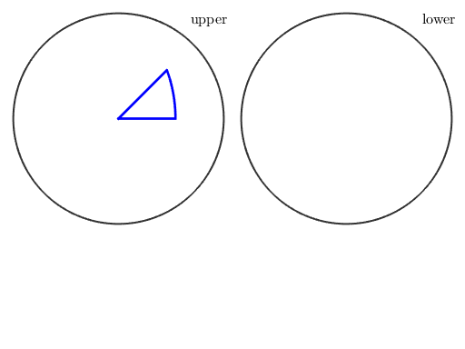

%N = [-zvector,yvector,vector3d('polar',pi/2,-pi/4),... % vector3d('polar',pi/2,pi/2+pi/4)]; N = [zvector,xvector,yvector,vector3d.byPolar(pi/2,-pi/4),vector3d(-1,-1,1)] N = [vector3d(1,-1,0),vector3d(-1,0,1),yvector,zvector]; %N = [vector3d(1,-1,0),vector3d(0,-1,1),yvector,zvector]; %N = [vector3d(0,-1,1),vector3d(-1,0,1),xvector,yvector,zvector]; sR = sphericalRegion(N./norm(N),zeros(size(N))); %plot(zvector,'grid','on','upper') plot(sR,'Color','b','linewidth',2,'complete')
N = vector3d
size: 1 x 5
x y z
0 0 1
1 0 0
0 1 0
0.707107 -0.707107 0
-1 -1 1

| DocHelp 0.1 beta |